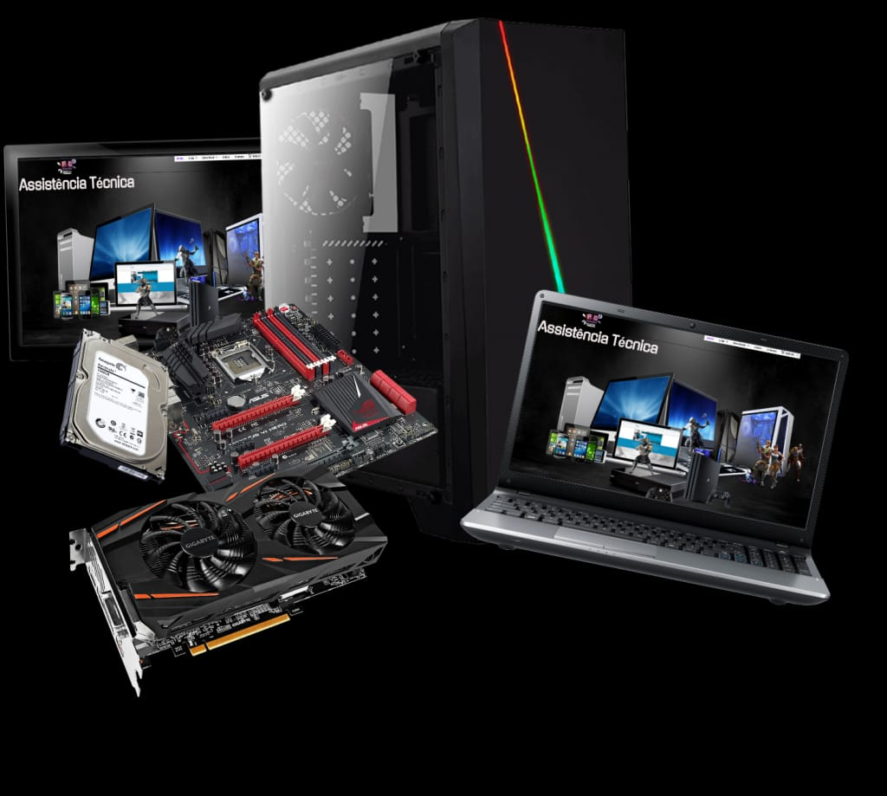
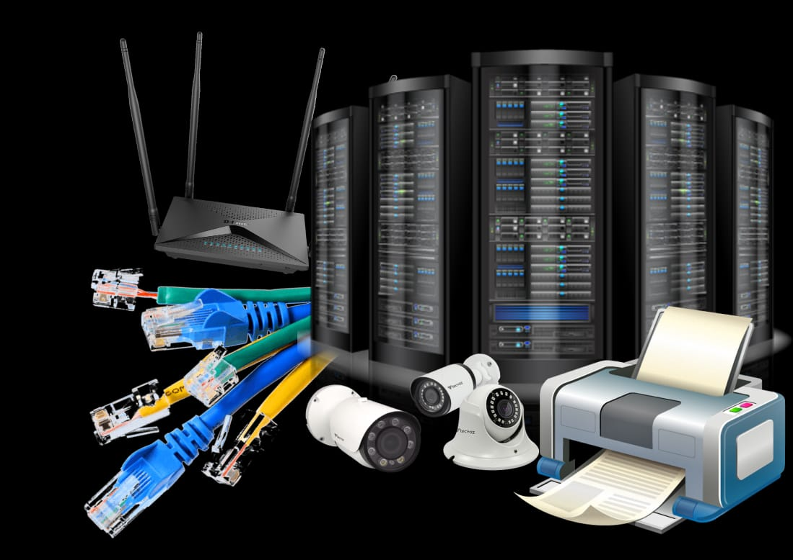

Significado de informática
Informática é um termo usado para descrever o estudo e o desenvolvimento das tecnologias de informação em prol das pessoas, organizações e sociedades. A informática é um campo do conhecimento que leva em conta as relações existentes entre as pessoas e a informação por meio da construção de interfaces, novas tecnologias e sistemas direcionados para a solução ou para a automatização de problemas.
Atualmente, os conhecimentos de informática são cada vez mais necessários para que os indivíduos tornem-se tecnologicamente autônomos, uma vez que é crescente a adoção de interfaces e sistemas completamente informatizados. Os principais objetivos da informatização e da automatização, nesses casos, assim como acontece com os caixas eletrônicos, é a agilização dos serviços e a redução de ocorrências de falhas humanas.
A informatização de eletrodomésticos e, até mesmo, de residências está cada vez mais presente em nossa sociedade. Essas mudanças são cada vez mais cotidianas e, por isso, é necessário que os nossos conhecimentos de informática sejam constantemente atualizados.

Serviços em Computadores
Manutenção de computadores
Upgrade
Formatação
Manutenção
Reparo
Instalação de jogos
Instalação de Software
Remoção de virus
Redes e servidores
Instalação de Roteadores e Switch
Cabeamento de rede
Configuração de impressora
Configuração de camera de segurança
Configuração de servidores
Rede Wifi para empresa e visitantes
- Não perca tempo, não deixe para depois, nos contacte.